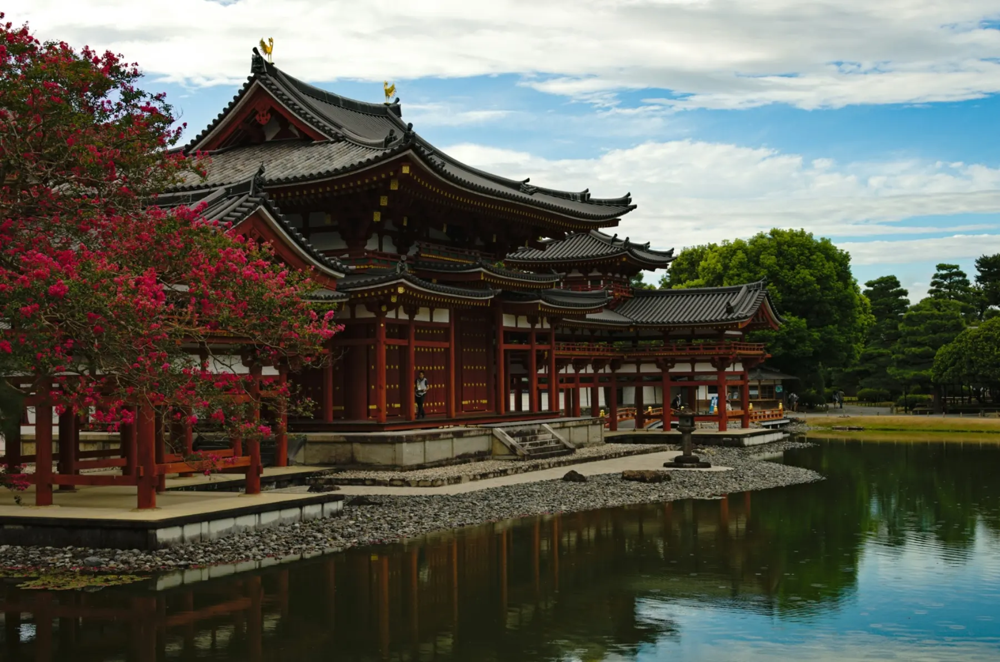

Kyoto in the morning, Osaka after dark, and Nara as the day grows quiet.
Kyoto is worth meeting before the busiest part of the day begins. Photo: Freddie Marriage / Unsplash.
From Taka’s Notebook
Guests sometimes ask me, “Which do you recommend visiting first—Kyoto or Osaka?”
If it were my journey, I would begin with Kyoto.
Of course, that is not the only right answer. My reason comes from the way I like to travel.
I believe when you visit a place can matter just as much as where you go. Every city has a time of day when its character feels especially clear. If you choose that time well, even a familiar landmark can become a more personal memory.
Kyoto Is Best in the Morning
On your first day of sightseeing, when you can hardly wait to begin experiencing Japan, try waking a little earlier than usual.
If someone asks me where to go first in Kyoto, I recommend Fushimi Inari Taisha in the early morning. The lower torii paths become busy later in the day, but an early start gives you more room to hear your footsteps and notice the changing light between the gates. Even in summer, the air is usually cooler before the sun climbs high.
You do not need to race to the top. Walk at your own pace, pause at a viewpoint, and watch Kyoto slowly wake below you. I have visited many times, and this is still the hour I enjoy most.
Kyoto’s riverside paths and eastern streets feel gentler before the day gathers speed.
After Fushimi Inari, continue toward Kiyomizu-dera and Gion for a full Kyoto day. Keep Kyoto and Osaka on separate days; each city deserves enough time to unfold in its own way.
A Kyoto day can move naturally from a quiet shrine morning to the old streets of Gion.
If You Are Tired from Travelling
If you have only just arrived in Japan after a long journey, there is no need to force yourself into central Kyoto on the first day.
On a tired afternoon, I would choose Iwashimizu Hachimangu. From Kuzuha, take a short local train ride to Iwashimizu-hachimangu Station, then ride the cable car up Mount Otokoyama. At the top, wooded paths lead through a quiet shrine precinct, and a viewpoint looks out across southern Kyoto.
The shrine is usually calmer than Kyoto’s best-known sights. You can breathe, stretch your legs, and begin noticing the atmosphere of Japan without asking too much of yourself.
The cable car turns a gentle first outing into a small journey of its own. Photo: L26 / Wikimedia Commons, CC BY-SA 4.0.Iwashimizu Hachimangu offers a peaceful introduction to Japan close to Kuzuha.
A journey does not have to begin at full speed. Rest a little, take this gentler walk, and leave for Kyoto with fresh energy the following morning. I like that kind of beginning too.
Osaka does not require the same early start. Enjoy a slow morning, have breakfast, and travel into the city in the afternoon. That is often enough time to experience Osaka at its most energetic.
Begin with an afternoon walk around Shinsekai and Tsutenkaku. Stop for kushikatsu—small pieces of meat and vegetables fried on skewers—and let the neighbourhood’s bold signs and old-fashioned character set a completely different mood from Kyoto.
Later, choose the lively crowds and illuminated signs of Dotonbori, or look across the city lights from Umeda. Osaka grows more expressive as daylight fades. Food stalls become busier, signs glow above the streets, and dinner becomes part of the evening rather than a break from sightseeing.
This is why I would never squeeze Kyoto and Osaka into the same day. Give Kyoto its morning and Osaka its night. A relaxed departure does not mean missing Osaka; it may mean meeting the city at exactly the right time.
Dotonbori comes fully alive after dark. Photo: Kamaruld Salleh / Unsplash.
Nara Is Peaceful in the Evening
Nara also deserves its own day. Todaiji, Kasuga Taisha, Naramachi, and the paths across Nara Park can easily fill the hours without rushing.
But if you ask which moment I like best, it is late afternoon. As day visitors begin to leave, the park becomes quieter. The light softens around the trees and temple gates—and, somehow, the deer seem more relaxed too.
If you have several days, I recommend keeping Nara as a full-day trip. If your itinerary is generous and you prefer a lighter pace, another option is to spend the middle of the day beside the river and tea shops in Uji, then continue to Nara for the late afternoon. Allow plenty of time for the transfer and do not treat either place as a checklist.
Our Uji guide by Keihan Railway can help you decide whether that combination feels comfortable. If not, give Uji and Nara a day each. The reflections at Byodoin, a bowl of matcha, and an evening among Nara’s deer all deserve time.

Uji can be a calm daytime prelude to Nara—but only when your schedule leaves room to enjoy both. Photo: Kai Muro / Unsplash.
Every City Has Its Most Beautiful Hour
I think every city has a time when it looks most like itself.
Kyoto in the morning. Osaka at night. Nara in the evening.
Choosing not only the place, but the hour when that place feels most alive—or most peaceful—can make a journey much richer.
Japan is full of these changing moments: the first light between shrine gates, shop signs appearing after sunset, or a park growing quiet at the end of the day. Looking for them is one of the pleasures of travel.
A good day can begin slowly, with enough time to meet each city at its best.
So, Kyoto or Osaka First?
Whichever you choose, you can have a wonderful journey.
If you have not yet chosen where to stay, our practical base guide compares Kyoto, Osaka, and the option of staying between them.
But I would begin with Kyoto: wake a little early and walk through a quiet Fushimi Inari. If you are tired from travelling, spend the first day gently at Iwashimizu Hachimangu and save Kyoto for the next morning.
On another day, leave slowly for Osaka and stay as the city lights come on. In Nara, linger until the park begins to settle and watch the deer beneath the softer evening sky.
That is the kind of journey I enjoy. Travel is not only about where you go. Sometimes a small change in when you arrive can make a place feel much more special.
Some places are remembered for their landmarks. Others are remembered for the time of day you experienced them.
I think Kyoto, Osaka, and Nara are places like that.
Different cities, different hours—and one peaceful place to return to each evening.